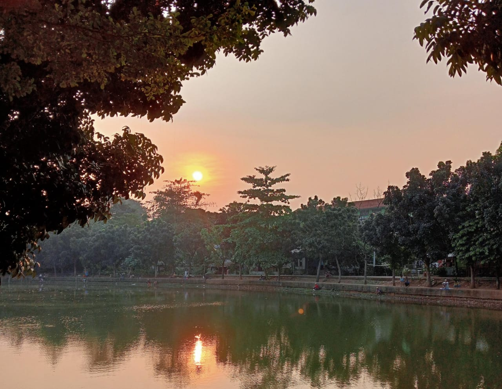

Selamat Datang di Aksara Senja

Ruang dimana Kamu dapat menjelajah dan menemukan ide-ide untuk membuat karya selanjutnya,
Selain itu Kamu juga dapat mengirim quotes terbaikmu untuk ditampilkan disini.
Berikut Kumpulan Quotes yang Dapat Menjadi Inspirasimu
1. "Beberapa hal tampaknya hanya perlu diketahui, bukan untuk dipahami"
2. "Impian dan kenyataan hanya terpisah oleh selembar kain tipis yang diberi nama harapan"
3. "Akan ada masa dimana kita akan dihadapkan pada pilihan disaat hati ingin mengejar impian, namun disaat yang sama kenyataan datang untuk menyadarkan"
4. "Menghindar dari takdir tidak akan mengubah jalan cerita yang sudah terukir"
5. "Ya karena enggak semua keinginan bisa jadi kenyataan, beberapa hanya akan menjadi angan"
6. "Untuk apa bertahan bertahan pada sesuatu yang lebih layak untuk diikhlaskan"
7. "Jika sudah tidak bisa diperjuangkan maka ikhlaskan, karena mengikhlaskan juga bagian (akhir) dari sebuah perjuangan"
8. "Tidak semua kepulangan berarti menerima kembali, terkadang ada beberapa kepulangan yang hanya pantas untuk dimaafkan, bukan untuk dimulai kembali"
9. "Perihal menyukai, pilihanya hanya bertahan dengan ketidakpastian, atau ungkapkan dengan risiko kehilangan"
10. "Sejauh apapun dia melangkah, jika kamu yang menjadi rumahnya, maka dia akan kembali tanpa kamu minta"
Ditulis oleh Natasya
Kunjungi Instagram kami @aksara_asenja
Untuk informasi lebih lanjut hubungi aksarasenja5920@gmail.com
Sampai bertemu dilain kesempatan!